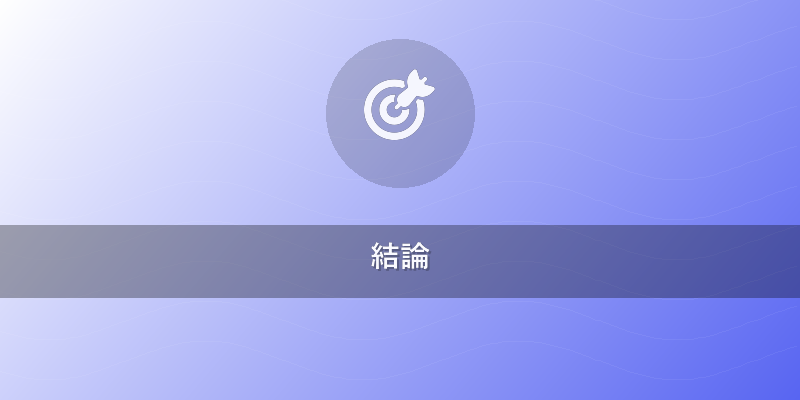
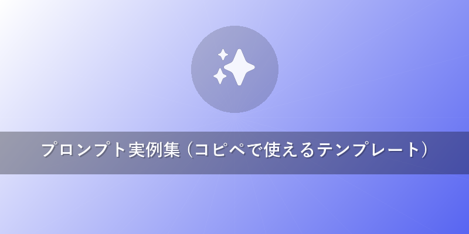
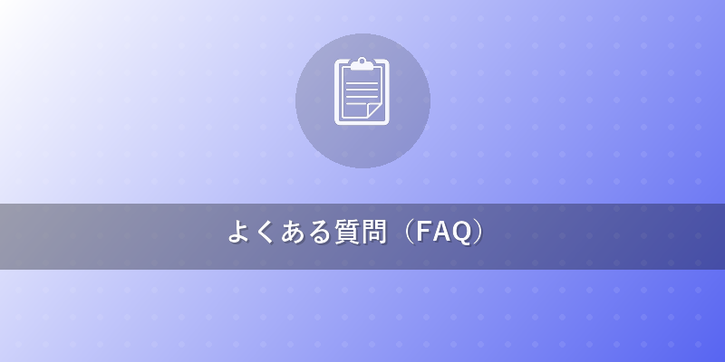

Midjourney 使い方2026年版！AI画像生成を始める完全ガイド
この記事でわかること
- Midjourney v7を含む最新バージョンの始め方から基本操作までを完全に理解できます。
- 初心者でもプロ並みの画像を生成するための効果的なプロンプト作成術とパラメータ設定が身につきます。
- 最新のWeb版の活用法や、商用利用・著作権に関する重要な注意点を知ることができます。

結論
Midjourneyを使い始めるのは非常に簡単ですが、真に魅力的な画像を生成し、そのポテンシャルを最大限に引き出すためには、Discord版とWeb版それぞれの特性を理解し、効果的なプロンプトエンジニアリングとパラメータ設定を学ぶことが鍵となります。2026年時点では、特に高度なスタイル参照機能や内部一貫性、そして専用Webインターフェースの進化が、クリエイティブ表現の幅を大きく広げています。
本題
Midjourneyを始める第一歩：Discord版とWeb版の活用術
Midjourneyを始めるには、主にDiscordを利用する方法と、近年進化を遂げたWeb版（Alpha/Beta）を利用する方法があります。初心者の方はまず、最も基本的なDiscord版から慣れるのがおすすめです。
- Discordアカウントの準備: まだ持っていない場合は、Discordアカウントを作成します。
- Midjourney Discordサーバーへの参加: Midjourney公式ウェブサイト(https://www.midjourney.com/)から、Discordサーバーへの招待リンクをクリックして参加します。
- サブスクリプションの開始: {{internal_link:Midjourney料金プラン}} の詳細はこちら。無料試用期間は終了しているため、まずはサブスクリプションプラン（Basic, Standard, Pro, Mega）のいずれかを選択し、支払いを完了させます。これにより、画像生成ボットを利用できるようになります。
- 画像生成の開始（Discord版）:
- Discordサーバー内の「Newbie」チャンネル（または専用のBotチャンネル）に入ります。
- チャット欄に
/imagineと入力し、プロンプト入力ボックスが表示されたら、生成したい画像のキーワードを入力します。 - 例:
/imagine prompt A futuristic cityscape at sunset, neon lights, flying cars, highly detailed, photorealistic --ar 16:9 --v 7 - エンターキーを押すと、Midjourneyボットが約60秒で4枚の画像を生成します。
- Uボタン（Upscale）: 生成された4枚の中から気に入った画像の番号を選んで高解像度化します。
- Vボタン（Variations）: 選んだ画像に似たバリエーションをさらに生成します。
- リロールボタン: 全ての画像を再生成します。
- Web版（Alpha/Beta）の利用: サブスクリプションユーザーは、Midjourney Web版（alpha.midjourney.com）も利用できます。Web版はより直感的なインターフェースで、プロンプトの管理、生成履歴の閲覧、アスペクト比の選択などが可能です。特に、最近ではWeb版でも直接画像生成ができるようになり、Discordでの操作が苦手な方には非常に便利です。
プロンプトエンジニアリングの基礎と応用
Midjourneyで理想の画像を生成するには、プロンプト（指示文）の質が最も重要です。単語の羅列だけでなく、構造とパラメータを理解することが成功への鍵となります。
-
基本的なプロンプト構造:
[主題], [詳細な描写], [スタイル], [雰囲気], [構図/カメラアングル] --パラメータ例:/imagine prompt A cozy log cabin in a snowy forest, smoke rising from the chimney, warm glow from windows, hyperrealistic, cinematic lighting, winter wonderland --ar 3:2 --v 7 --style raw --s 100- 主題 (Subject): 何を描きたいか (例:
log cabin) - 詳細な描写 (Details): 主題の特徴 (例:
cozy,smoke rising from the chimney,warm glow from windows) - スタイル (Style): どのような画風か (例:
hyperrealistic,cinematic lighting) - 雰囲気 (Atmosphere): 全体のムード (例:
winter wonderland) - 構図/カメラアングル (Composition/Angle): 視点やアングル (例:
wide shot,close-up)
- 主題 (Subject): 何を描きたいか (例:
-
重要パラメータ (
--で指定):--ar <width>:<height>: アスペクト比。例:16:9(横長),9:16(縦長),1:1(正方形)。--v <version>: モデルバージョン。最新は7(--v 7)。より高品質な画像を生成します。--style raw: 写実的な写真のような画像を生成しやすくします。--s <number>or--stylize <number>: スタイライズの強度。0〜1000。高いほどAIの美的感覚が強く反映されます（--s 250がデフォルト）。--c <number>or--chaos <number>: カオス度。0〜100。高いほど多様な結果が生成されます。--iw <number>: Image Weight。プロンプトに画像URLを組み合わせる際に、その画像の影響度を調整します。--sref <URL>: Style Reference。参照画像のスタイルを適用します。2026年時点でv7の強力な新機能の一つです。--cref <URL>: Character Reference。参照画像のキャラクターを維持して生成します。--seed <number>: シード値。同じシード値を使うことで、似た構図や構成の画像を再現しやすくなります。
高度なスタイル制御と商用利用のヒント
Midjourney v7では、特に--srefや--crefといった参照機能が強化され、より精密なスタイルコントロールが可能になりました。
また、商用利用を考えているクリエイターにとっては、ライセンスと著作権の理解が不可欠です。
- スタイル参照 (
--sref) の活用:--srefパラメータに参照したい画像URLを指定することで、その画像の「画風」や「雰囲気」を自身の生成画像に適用できます。これは、特定のアーティストのスタイルを模倣したり、既存のビジュアルアイデンティティを維持したりする際に非常に強力です。- 例:
/imagine prompt a whimsical forest spirit, highly detailed --sref [画像URL]
-
キャラクター参照 (
--cref) の活用:- 連続した作品で同じキャラクターを登場させたい場合に有効です。参照画像のキャラクターの特徴を保持しつつ、異なるポーズやシーンを生成できます。
- 例:
/imagine prompt the forest spirit riding a giant mushroom --cref [キャラクター画像URL]
-
商用利用と著作権に関する注意事項:
- サブスクリプションプラン: Midjourneyで生成した画像の商用利用は、基本的に有料サブスクリプションプラン（Basic以上）の加入者であれば可能です。無料試用期間中に生成した画像は商用利用できません。
- 著作権: 生成された画像の著作権は、Midjourneyの利用規約に従い、多くの場合、生成者（ユーザー）に帰属します。しかし、生成に使われた元データが著作権保護された作品を含む場合、その「著作権侵害」の責任はユーザーにあると見なされる可能性があります。
- 倫理とガイドライン: ポルノ、ヘイトスピーチ、暴力的なコンテンツなど、Midjourneyのコミュニティガイドラインに違反する画像生成は厳しく禁じられています。
- 透明性: 商用利用する際には、AIが生成した画像であることを明確に表示することが、特に2026年時点では推奨されます。これは消費者の信頼を得る上で重要です。
- {{internal_link:AI画像生成の著作権ガイド}} で詳細を確認してください。

プロンプト実例集（コピペで使えるテンプレート）
1. 写実的な風景画
/imagine prompt A serene Japanese garden in autumn, vibrant red maples, moss-covered stones, tranquil pond with koi fish, soft diffused light, hyperrealistic photography, depth of field --ar 16:9 --v 7 --style raw --s 100
（解説：秋の日本庭園を、鮮やかな紅葉と鯉が泳ぐ池で写実的に描くプロンプト。アスペクト比16:9で、最新のv7とrawスタイルを使用し、スタイライズを控えめにしています。）
2. サイバーパンクなキャラクターデザイン
/imagine prompt A female hacker, cybernetic enhancements, glowing neon streaks on her jacket, rainy Tokyo street at night, detailed character portrait, cinematic, dark atmosphere --ar 2:3 --v 7 --c 20 --style expressive
（解説：サイバーパンクな女性ハッカーのポートレート。雨の東京の夜景を背景に、ネオンの光が特徴的。v7の表現豊かなスタイルで、カオス度を少し上げてバリエーションを期待します。）
3. ファンタジー世界のクリーチャー
/imagine prompt A majestic griffin with golden feathers, soaring over an ancient castle ruin, dramatic lighting, epic fantasy art, highly detailed, dynamic pose --ar 3:2 --v 7 --sref [ファンタジーアートの参照画像URL]
（解説：金色の羽を持つグリフィンが古城の上を飛ぶ壮大なファンタジーアート。参照画像URLで特定のファンタジーアートのスタイルを模倣できます。）
4. ミニマルなUI/UXデザイン要素
/imagine prompt Clean UI/UX button design for a mobile app, frosted glass effect, soft gradients, abstract background, modern, minimalist --ar 1:1 --v 7 --no text, branding
（解説：モバイルアプリ向けのクリーンでミニマルなUIボタンデザイン。フロストガラス効果やソフトなグラデーションを使用し、テキストやロゴの生成を抑制しています。）
他のAI画像生成ツールとの比較
2026年現在、MidjourneyはAI画像生成分野で依然として強力な存在ですが、Flux、DALL-E、Stable Diffusion、Adobe Fireflyといった競合ツールもそれぞれの強みを持っています。
| ツール名 | 特徴・強み | 用途・向き不向き | ライセンス・商用利用 |
|---|---|---|---|
| Midjourney | - 芸術的な表現力: 独特の美的センスと高い画質。 - 簡単な操作性: DiscordまたはWeb版で直感的に利用可能。 - スタイル一貫性: --srefなどで統一感を出しやすい。 |
- 高品質なアート作品、コンセプトアート、イラスト作成。 - 雰囲気重視の画像生成。 |
- 有料プランで商用利用可。著作権はユーザーに帰属するケースが多い。 |
| Flux | - 高速生成と高精細: 新興勢力で高速かつ高品質な生成。 - 独自のUI/UX: 独自のワークフローでクリエイティブを支援。 - リアルタイム編集: 一部の機能でリアルタイムプレビュー。 |
- 迅速なアイデア出し、プロトタイピング。 - 特定のスタイルに特化したクリエイター。 |
- 各プランによる。詳細な規約を確認する必要がある。 |
| DALL-E 3 (OpenAI) | - 自然言語理解: プロンプトの意図を正確に解釈。 - テキスト生成精度: 画像内に高品質なテキストを含められる。 - ChatGPT連携: 会話型でプロンプトを洗練できる。 |
- 具体的なシーンやオブジェクトを含むイラスト、バナー。 - テキストを含んだデザイン。 |
- 有料利用で商用利用可。OpenAIの規約に基づく。 |
| Stable Diffusion | - オープンソース: 自由にカスタマイズ可能。 - 多様なモデル: 多数の派生モデルやLoRAが存在。 - ローカル実行: PCスペック次第でオフライン利用も。 |
- 研究開発、ニッチな表現の追求、アニメ調イラスト。 - 高度な技術知識を持つユーザー向け。 |
- 基本的にMITライセンス。商用利用はモデルごとに規約確認が必要。 |
| Adobe Firefly | - Adobe製品連携: Photoshopなどとの親和性。 - 商用利用への配慮: アドビストックなど著作権クリアなデータで学習。 - テキストエフェクト/ジェネレーティブ塗りつぶし: 特定の用途に特化。 |
- Adobeエコシステム内で作業するデザイナー、クリエイター。 - テキストのスタイル適用、部分修正。 |
- Adobeの規約に従う。商用利用は可能だが、Fireflyクレジット消費。 |

よくある質問（FAQ）
Q1: Midjourneyの料金プランはどのようになっていますか？
A1: Midjourneyには、Basic、Standard、Pro、Megaの4つの主要な有料プランがあります。プランによって月間のGPU時間（画像生成に使える時間）や同時生成数、Fastモードの利用可否、Relaxモード（生成速度は遅いがGPU時間を消費しない）の利用可否などが異なります。月額10ドル程度のBasicプランから、より多くのGPU時間を必要とするプロフェッショナル向けのMegaプランまで、ニーズに合わせて選択できます。常に最新の料金プランは公式ウェブサイトで確認してください。
Q2: Midjourneyで生成した画像を商用利用することは可能ですか？また、著作権はどうなりますか？
A2: はい、有料サブスクリプションプラン（Basic以上）に加入していれば、生成した画像の商用利用は基本的に可能です。無料試用期間中に生成した画像は商用利用できません。著作権については、Midjourneyの利用規約に基づき、有料プランのユーザーが生成した画像の著作権は多くの場合、生成者であるユーザーに帰属します。ただし、生成に用いたプロンプトや参照画像が既存の著作物を模倣している場合、著作権侵害のリスクが生じる可能性があります。また、AIが生成したコンテンツであることを明確に表示することが、特に商業利用においては推奨されます。
Q3: Midjourneyで画像を生成できない、またはエラーが出た場合の対処法は？
A3: まず、Discordのチャット欄に/infoと入力し、現在の残りのGPU時間（Fast Time Remaining）を確認してください。これがゼロだと画像は生成できません。プランをアップグレードするか、Relaxモード（Standardプラン以上）に切り替える必要があります。次に、MidjourneyボットやDiscordサーバー自体に一時的な障害がないか、公式アナウンスを確認してください。また、プロンプトに不適切な単語（コミュニティガイドライン違反）が含まれている場合も生成がブロックされることがあります。シンプルなプロンプトで試したり、Midjourney Discordサーバーのヘルプチャンネルで質問するのも有効です。
おすすめサービス・ツール
この記事で紹介した内容を実践するために、以下のサービスがおすすめです。
- Midjourney - Midjourneyに登録する
- Amazon - AmazonでAI画像生成関連書籍を探す
- 楽天ブックス - 楽天でAI画像生成関連書籍を探す
※ 上記リンクからご利用いただくと、サイト運営の支援になります。
まとめ
Midjourneyは2026年現在も、その芸術的な表現力と革新的な機能でAI画像生成の最前線を走り続けています。Discordでの簡単な始め方から、Web版の進化、そしてプロンプトエンジニアリングにおける--srefや--crefといった高度なスタイル制御まで、その可能性は無限大です。商用利用や著作権に関する注意点を踏まえつつ、あなたもMidjourneyで想像力を形にするクリエイティブな旅を始めてみませんか？
さあ、今すぐMidjourneyの世界へ飛び込み、あなただけのビジュアルアートを創造しましょう！